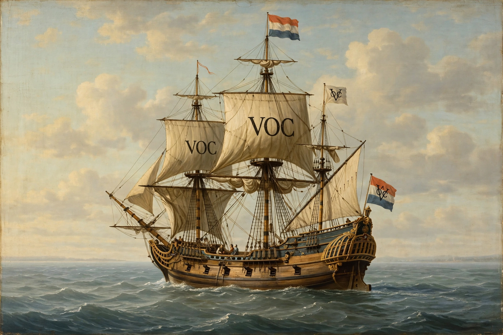

| Dutch East India Company | |
|---|---|
| Native name | Vereenigde Oostindische Compagnie (VOC) |
| Founded | 20 March 1602 |
| Defunct | 31 December 1799 |
| Headquarters | Amsterdam, Dutch Republic |
| Industry | International trade |
| Products | Spices, silk, tea, porcelain, slaves, textiles, coffee |

The Dutch East India Company, officially the United East India Company (Dutch: Vereenigde Oostindische Compagnie; VOC), was a chartered company established on 20 March 1602 when the States General of the Netherlands granted it a 21-year monopoly to carry out trade activities in Asia. Sometimes considered the first corporation in the world to issue bonds and shares of stock to the general public, the VOC was the first recorded joint-stock company to get a fixed capital stock.
The company was historically an exemplary company-state rather than a private company: it was technically a multinational corporation granted quasi-governmental powers, including the ability to wage war, imprison and execute convicts, negotiate treaties, strike its own coins, and establish colonies.
Statistically, the VOC eclipsed all of its rivals in the Asia trade. Between 1602 and 1796 the VOC sent almost a million Europeans to work in the Asia trade on 4,785 ships, and netted for their efforts more than 2.5 million tons of Asian trade goods. Its administrative capital in Asia was Batavia (present-day Jakarta), founded in 1619 on the island of Java.
By 1800 the company had fallen into financial distress through corruption, the costs of maintaining its empire, and competition from the English East India Company. The heavily indebted company was dissolved on 31 December 1799, and its possessions and debt were taken over by the government of the Dutch Batavian Republic.
See also: Batavia · Dutch Empire · East India Company · Amsterdam